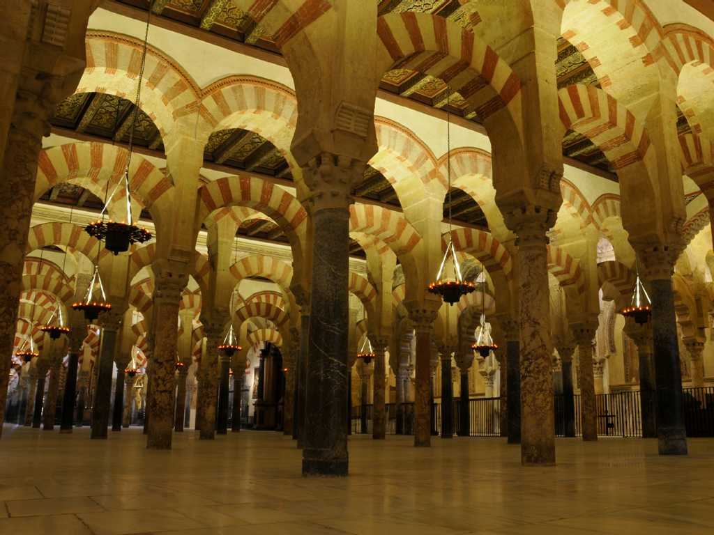
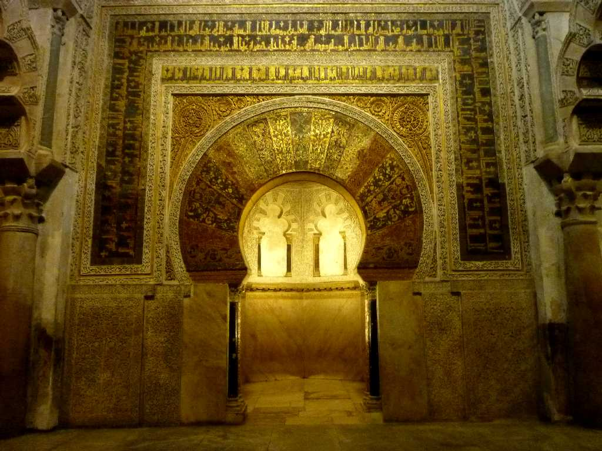
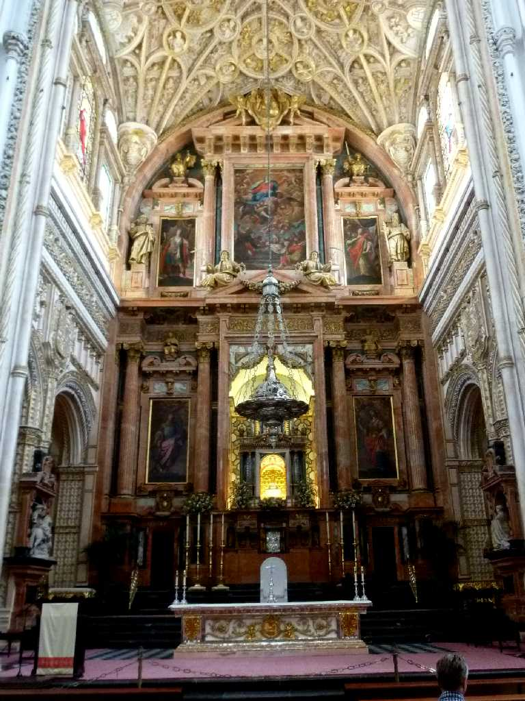

Mezquita Cordoba
西ゴート王国の聖ビセンテ教会を７８５年イスラム教の寺院として後ウマイア朝のアブデラマン１世時代に破壊されず増改築された その後カスティリャ王フェルナンド ３世により１２３６年内部に礼拝堂を設けるなどカテドラルがさらに増改築されカトリック教会に転用された メスキータはイスラム教とキリスト教の２つの宗教が同居する珍しい建物となっている

Mihrab Mezquita

Cathedral Mezquita